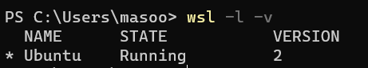

Students will:
Discord, VS Code)
WSL (Windows Subsystem for Linux)
which allows the use of linux on a Windows machine
Node.js, a JS runtime engineGit, VersionMake sure you sign up for an account on the following sites:
You also need to:
There are a number of technical setup items we need to get
out of the way that will make our learning process go more
smoothly. The video below will walk you through setting up
your environment with WSL (Windows Subsystem
for Linux).
Before you watch the video, check the notes below for
some recent updates.
Prior to starting, ensure virtualization is enabled.
The steps to enable virtualization will differ depending on your system. Find instructions for your manufacturer here.
Repeat 1-3 to confirm it has been enabled
If you’re using Windows 10 or higher, you can install
WSL with a very simple command. Open Command
Prompt as an administrator, and run the following line:
wsl.exe --install
This command will install everything you need, including
Ubuntu by default. You can double check that
WSL is using Ubuntu by using:
wsl -l -v
If you see this:
You’re successfully running Ubuntu!
Next, click on the Windows icon > search for Ubuntu and open it up. You may be prompted to create an account with a username and password. Note that this username and password is only for Ubuntu and is separate from your regular Windows account.
You can now continue with the video at time marker 9:32.
For older versions of Windows, you will need to do this manually. The page linked in the video (time marker 2:32) can now be found here:
Manual installation steps for older versions of WSL
You can now follow the video from this 2:32.
If you have any issues, please look through the “Troubleshooting” section
bash <(curl -s https://raw.githubusercontent.com/VSchool/computer-setup/master/vschool-computer-setup.sh)
*bash <(curl -s* https://raw.githubusercontent.com/VSchool/computer-setup/master/vschool-computer-setup.sh)
echo $PATH/mnt/Users/<USERNAME>/AppData/Local/Programs/Microsoft
VS Code/bin
export
PATH="$PATH:/mnt/Users/<USERNAME>/AppData/Local/Programs/Microsoft
VS Code/bin"
VS Code
If you receive a message about virtualization not being enabled, follow these steps:
The steps to enable virtualization will differ depending on your system. Find instructions for your manufacturer here.
Repeat 1-3 to confirm it has been enabled
Copy & paste the following address into your file explorer’s address bar:
\\wsl$\Ubuntu\
If you see / instead of ~ before
the prompt ($), open up the settings page in
Windows Terminal, click on “Open JSON file” and scroll down
to the Ubuntu profile object.
Replace this:
"startingDirectory": "//wsl$/Ubuntu/home/<USERNAME>"
with the following:
"startingDirectory": "/home/<USERNAME>"
Run this command in your root directory (~):
sudo chown -R USERNAME:USERNAME ~
If you’re using WSL, open up your settings.json
file and add this:
"liveServer.settings.AdvanceCustomBrowserCmdLine": "/mnt/c/Program Files/Google/Chrome/Application/chrome.exe"
If you prefer to not use WSL, you can follow
the written Manual Technical Setup below
If anything appears to be out of order, please reach out to an instructor for help before trying to mess with something yourself.
If you ran the setup script from the top of this article, you're already done! No need to do any of the steps in this section. 🎉
cat ~/.ssh/id_rsa.pub.
ssh-keygen -t rsa -N "" -f id_rsa -C
your_github_email@here.com
(Making sure to replace
your_github_email@here.com with the actual
email you use on Github). If you're unsure which email
you used to sign up for Github, check the Public email
section of
your Github profile settings
cat ~/.ssh/id_rsa.pub and copy your new
ssh key to the clipboard so you can add it to your
GitHub account.
NVM and Node.jsFollow the instructions from online documentation
You may be able to use the instructions on our post about setting up your terminal to be awesome on Mac
Git configEnter the following (replacing the name and email with your actual name and GitHub email address):
git config --global user.name "Your Name"
git config --global user.email "your.email@example.com"
This ensures you get credit on GitHub for your commits.